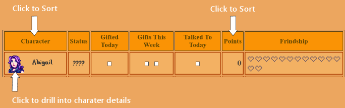
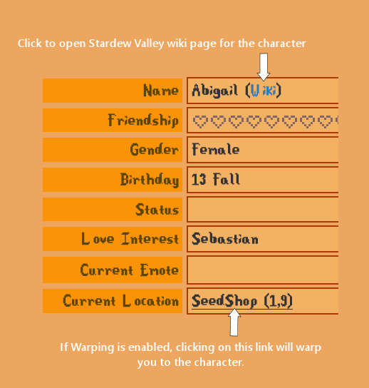
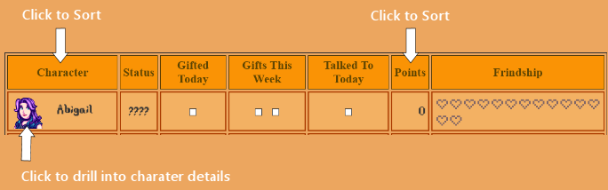
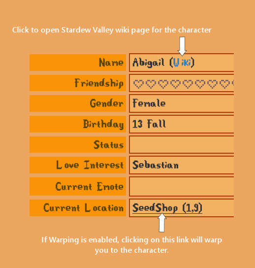
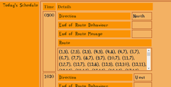
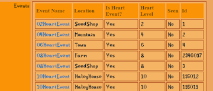
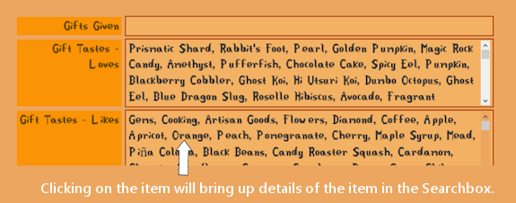

The Social tab provides details about all of the dataeable and non-dateable characters in the game. This includes both vanilla and mod characters.
The list view gives a quick summary of the essentials stats about your relationship with that character.

IF you click on the character's image you will be brought to a detail view about that characters.



IF you click on the character's image you will be brought to a detail view about that characters.

| The amount of information about the character depends upon what options you have enabled. | |||
|
 | ||
|  | The Events row shows any Events for the character. Clicking on the Event Name row will bring you to a detailed view about that Event. | ||
| Any items already gifted will be shown in the Gifts Given row. If Gift Tastes are enabled, any gifted gifts will be shown in red in the Gift Tastes lists. |  | ||
| Clicking on any of the items listed in the Tastes will bring up the entry for that item in Stardew Web Search engine. If the 'Add To' button is enabled, you will be able to added that item to your inventory from the Searchbox. | |||